Text values and observable program behavior
Gregory S. DeLozier, PhD
| Earlier code | Change needed |
|---|---|
print x |
print(x) |
Variables input, number,
string |
Rename: now keywords |
Ordinary __input, __output variables |
Rename: now special globals |
Earlier programs may need edits.
__input = "Ada";
name = input("Name? ");
print("Hello, " + name + "!");Hello, Ada!| Source | Value |
|---|---|
"42" |
String |
42 |
Integer |
"" |
Empty string |
"a\nb" |
Text containing a newline |
An escaped character or an ordinary character
Ordinary character: copy it. Backslash: consume two characters.
| Source characters | Value characters |
|---|---|
\n |
One newline |
\" |
One quotation mark |
\\n |
A backslash followed by n |
\q |
Syntax error |
"ha" * 3 + "!"

| Expression | Result |
|---|---|
"ha" * 3 |
"hahaha" |
3 * "ha" |
"hahaha" |
"3" + "4" |
"34" |
3 + 4 |
7 |
"ha" * 3.0 |
Type error |
name = input();
name = input("Your name? ");Typing 42 produces "42".
| Expression | Result |
|---|---|
number("42") |
Integer 42 |
number("-3") |
Integer -3 |
number(" .5 ") |
Float 0.5 |
number("5.") |
Float 5.0 |
answer = 21 * 2;
print(answer);
print("Answer: " + string(answer));42
Answer: 42input_expression ::= "input" "(" [ expression ] ")"
number_expression ::= "number" "(" expression ")"
string_expression ::= "string" "(" expression ")"answer = number(input()) * 2;number("21")
print_statement ::= "print" "(" expression ")"| Source | Accepted? |
|---|---|
print(42) |
Yes |
print 42 |
No |
value = print(42) |
No |
print(42);
saved = __output;
print("Captured: " + saved);| Variable after the program | Value |
|---|---|
saved |
"42" |
__output |
"Captured: 42" |
__input = "Ada";
name = input();| After input | Value |
|---|---|
name |
"Ada" |
__input |
"" |

__input = "21";
answer = number(input()) * 2;
print(answer);Expected: __input is "",
__output is "42".
| Example | Stage |
|---|---|
| Unterminated string | Tokenization |
number() |
Parsing |
number("hello") |
Evaluation |
"ha" * 2.0 |
Evaluation |
Supplied input, clearing, captured output, conversions
Supply "18.5", add 2, and print
"Total: 20.5".
Check the result and confirm that the input was consumed.